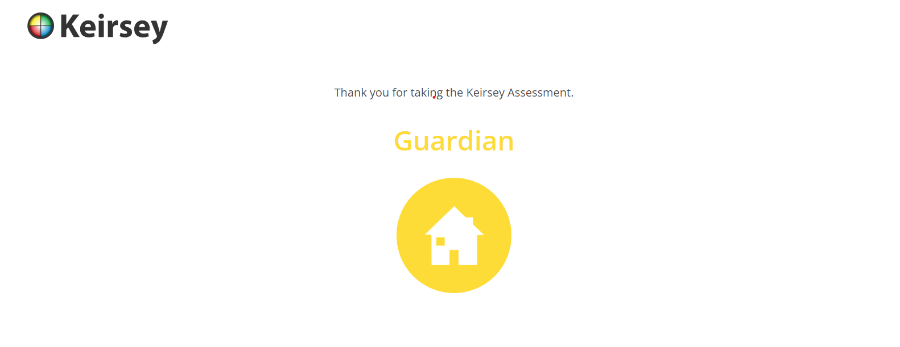

| Background | Professional | Personality | Personal Development | Storyboard | Reference |
|---|
Many of my strongest traits were groomed through my hobby and have also greatly benefited my academic life. Teamwork - Volleyball as a hobby teaches the importance of teamwork. You are able to lean on team members for support and motivation. That helps you to get better at what you're learning. Teamwork helps in accountability (peers holding you to a standard where you have the responsibility to present work for a grade that will impact them). Your team trusts you and in order to succeed, you have to give your best. This is used as a guide when approaching group work in my academic life. Practice - You have to train constantly to get better at volleyball. The way practice is structured, helps in how you play the game. I utilize this method in my academic life by structuring days for studying, practicing and analyzing notes and work that was done or to be completed.
Quote: With man this is impossible, but with God all things are possible.
- Jesus (Matthew 19:26)
Jesus is my hero because his life and teachings provide a foundation of hope, faith, and perseverance. His message
that "with God all things are possible" motivates me to face challenges with confidence and trust that, through
faith and hard work, I can achieve my goals.
His love, compassion, and dedication to helping others inspire me to live a life of purpose and service,
constantly aiming to grow both personally and professionally. In everything I do, I aim to reflect Jesus'
example of kindness, humility, and strength.
The personality test revealed the following:
Reflection: In general, I believe this test to be somewhat invalid due to inaccuracy. While completing the the test I noticed that all questions only came with two options. It required you to give responses with one of two extrems, not accounting for someone who thinks they fall somewhere inbetween. The test doesnt allow you to manualy move back and forth between questions. Instead you are automatically sent to a new question once you have selected an option. I believe this creates room for error because if a person accidetally selected the wrong option, they are immediately sent to another question and therfore unable to make the correction because they can't go back.
Click here to try the Keirsey personality test.| RETURN TO THE TOP |
|---|